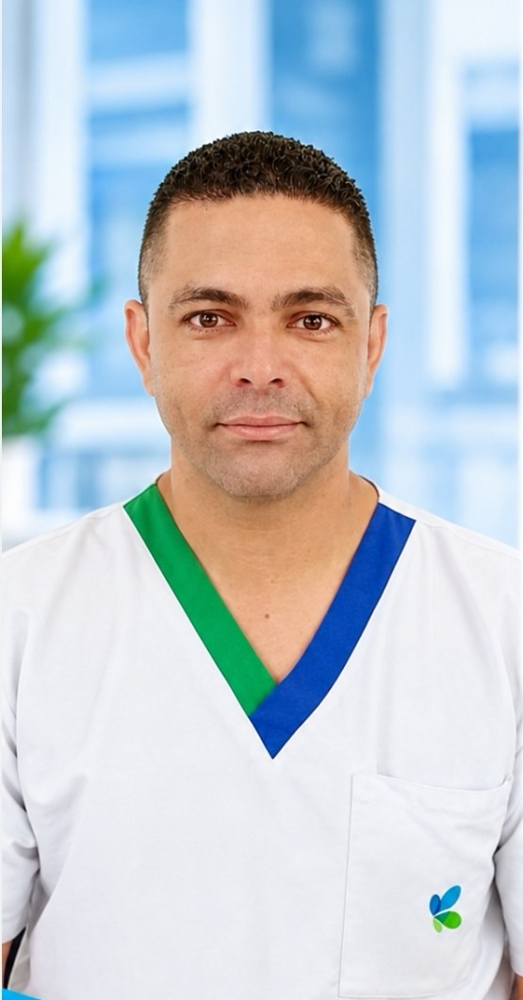

Regional con afiliados activos en Cartagena y la costa Caribe.
Dirección: por confirmar.
Principales empresas donde trabajan: EPS Sanitas (21) · Clínica Colsanitas (15).
Base de afiliados SINTRAOSI, septiembre de 2026.
Celia Margarita Baldiris Babilonia
El equipo que representa a los afiliados de SINTRAOSI en Cartagena.
Presidencia
Vicepresidencia
Secretaría general, fiscalía y secretarías

Comunicados y novedades publicadas específicamente para Cartagena.